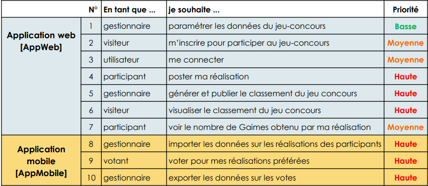

Gedimagination
A partir du début Novembre 2022 jusqu'à fin Mai 2023.

Contexte
C'est un projet réalisée en seconde année de BTS SIO, un jeu concours qui se base sur une réalisation qu'on poste sur un site web et qu'on vote en magasin sur une tablette soit une application mobile. J'ai travaillé étroitement en binôme avec un camarade de ma promotion et pour ça, nous avons utilisé divers outils pour se transmettre notre avancée ainsi que les futurs choses à effectuer. Pour les outils, Github pour ce qui est du versionning, Trello pour les tâches à suivre et Teams pour les transferts de fichiers ou partage d'informations.
Réalisation
Pour ce projet, nous avons été contraint de travailler selon une démarche agile sous forme de sprints avec un backlog récapitulant toutes les étapes.
En premier, nous avons créé notre formulaire soit la partie web de notre jeu concours.
Afin de communiquer entre nos deux applications, on a du mettre en place une API pour qu'elle envoie les données enregistrées en BDD à l'application mobile pour le vote.
Pour se connecter à l'interface utilisateur, le votant doit entrer un code valide. Lors du vote, il a le choix entre trois réalisations et peut attribuer une note allant de 1 à 5. Ensuite, on retransmet les données insérées dans la BDD embarquée grâce à une autre API.
Grâce à tout ça, on peut générer un classement qui affiche les trois premiers du jeu concours.
Bilan
En travaillant en adéquation avec un binôme, ça force au travail d'équipe et à avancer sur un projet en commun en se donnant mutuellement des idées pour mener à bien notre réalisation.